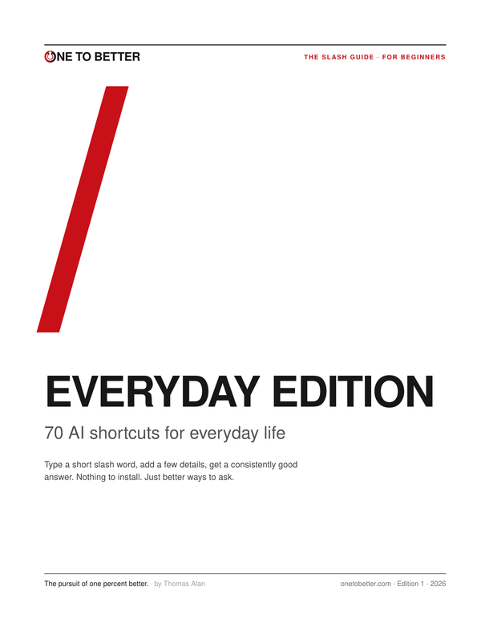
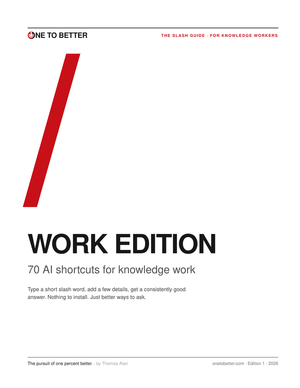

Everyday Edition
AI shortcuts for everyday life · For beginners
Inside
- Write it for me
- Explain it to me
- Kitchen and home
- Trips and outings
- Health, with your doctor
- Tech help
- Money and paperwork
Every shortcut with what to add and an example, laid out to print. No email, no sign-up. Share them with anyone.

AI shortcuts for everyday life · For beginners

AI shortcuts for knowledge work · For knowledge workers
Shortcuts your AI understands, not official features of any AI product. Results vary a little by model. Never paste confidential or company data, and follow your employer's AI policy.